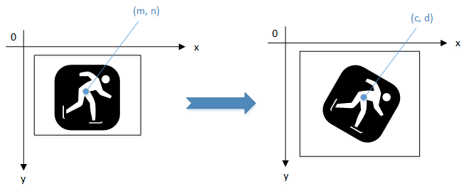

任意角度旋转
20 Nov 2024
Read time: 1 minute(s)
进行任意角度旋转的时候可以进行 blending，并且可以指定原图和目标图的旋转中心，任意角度旋转原图和目标图都只支持 RGB 格式。 其中旋转角度传给驱动的是旋转角度的 sin 和 cos 值，为 2.12 定点数，其中小数部分 12bits ，则应用程序计算 sin 和 cos 值的方法如下：

#include <stdio.h> #include <math.h> #define PI 3.14159265 #define SIN(x) (sin(x* PI / 180.0)) #define COS(x) (cos(x* PI / 180.0)) double degree = 30.0 // (0 <= degree < 360) angle_sin = (int)(SIN(x) * 4096); angle_cos = (int)(COS(x) * 4096); // 应用程序也可以预先生成需要的角度的 sin 和 cos 值列表，通过查表减小计算量